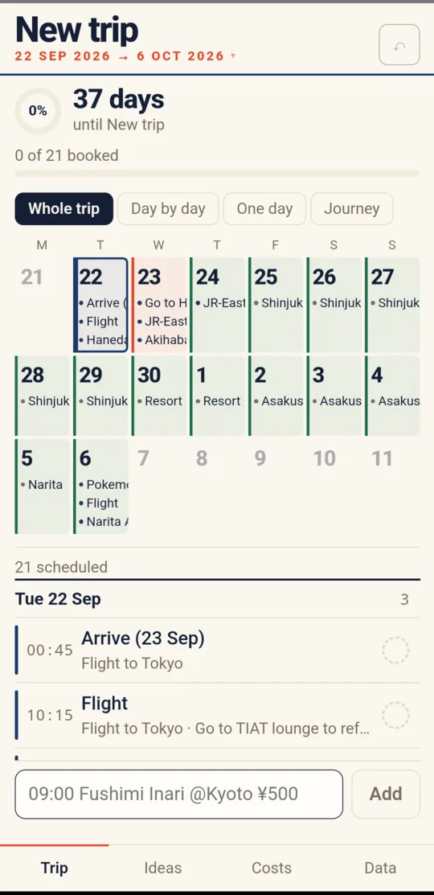
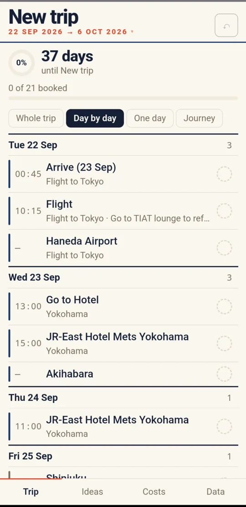

Offline by structure
Assets bundle into the app itself, so working offline isn't something a service worker has to get right on the day. It's how the app is put together.
People abandon trip-planning apps and return to spreadsheets for one reason above all others: they can't see the whole trip at once. TabiPlanner is built around fixing exactly that.
Beta

These came out of looking at why people abandon Wanderlog, TripIt, Tripsy and Roadtrippers. They drive every decision in the app, and they aren't up for relitigation.
These apps waste the screen. One day often fills the whole viewport. People go back to spreadsheets because a spreadsheet shows them everything.
Across fourteen independently written trip templates, six fields appear in eleven or more: date, time, activity, location, cost, notes. Plus status. That's the row. Being clever here helps nobody.
The trip is already in a spreadsheet. An app that opens to a blank grid gets abandoned that same evening. Import is a day-one feature, not a later one.
This gets used in rural Japan with no signal. Everything works offline by default. It isn't a paid tier and it isn't a degraded mode.
CSV, JSON and XLSX export from the first release. If the app disappoints you, your trip leaves with you.
Not missing features: data loss, sync bugs, performance collapse. So correctness and durability come before anything new.
You cannot fit a fortnight of activity detail onto a 390-pixel phone. That's arithmetic, not a design failure. So instead of one compromised view, there are four honest ones, switched with a single row of chips.
A month grid where every day of the trip carries its actual items, not a dot. This is the view people go back to spreadsheets for, and it's the reason the app exists.
Grouped by where you actually are rather than by date. Each leg shows the place, the span, how many nights and how many items, which is the view that catches "we've somehow given ourselves one night in Kanazawa".
Every day in sequence with its items and times, so you can read the trip top to bottom without tapping into anything.
A fourth mode, One day, narrows to a single date for when you're actually out and only care about today.

09:00 Fushimi Inari @Kyoto ¥500 becomes a timed, placed, priced item. It's the fastest
way to get a spreadsheet's worth of plans into the app without a form.
Not the smallest stack available, the one with the deepest supply of documented answers when something breaks the night before a flight.
Assets bundle into the app itself, so working offline isn't something a service worker has to get right on the day. It's how the app is put together.
A single record, written on a debounce. Inside the app's own WebView this is more durable than a browser: no eviction pressure, cleared only on uninstall.
The import parser, the CSV and XLSX writers, and the date and sort logic are the parts that can silently corrupt a trip. Those are the parts under test.
Locations hand off to the map app already on the phone, which knows about offline map data and doesn't need an API key or a billing account.
Import from the file the trip already lives in. Export to CSV, JSON or a properly styled XLSX whenever you want it back.
There's no server to go down, no account to lose access to, and no subscription to lapse mid-trip.
TabiPlanner has a date it has to work by, because it's being built for a specific trip: it needs to be usable by 1 September 2026, ahead of a flight to Japan on the 22nd. Between those dates it goes into real use and only gets fixes for things that genuinely hurt, not new features.
The measure of success isn't downloads or reviews. It's whether the spreadsheet stops being opened.
Select any screen to see it larger.
Screenshots from the in-development Android build, with a real trip loaded. Still changing.
TabiLog is finished and in daily use: a budget per traveller, receipts that can wait, and a report at the end that explains where it all went.